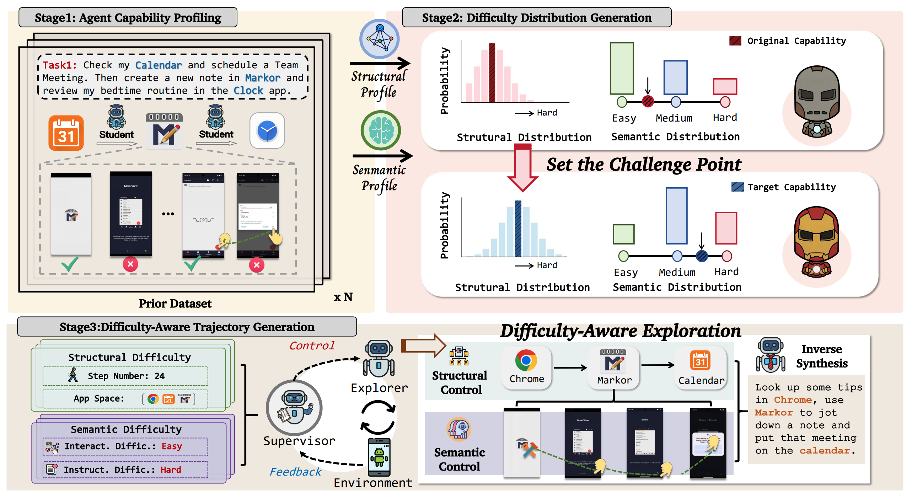
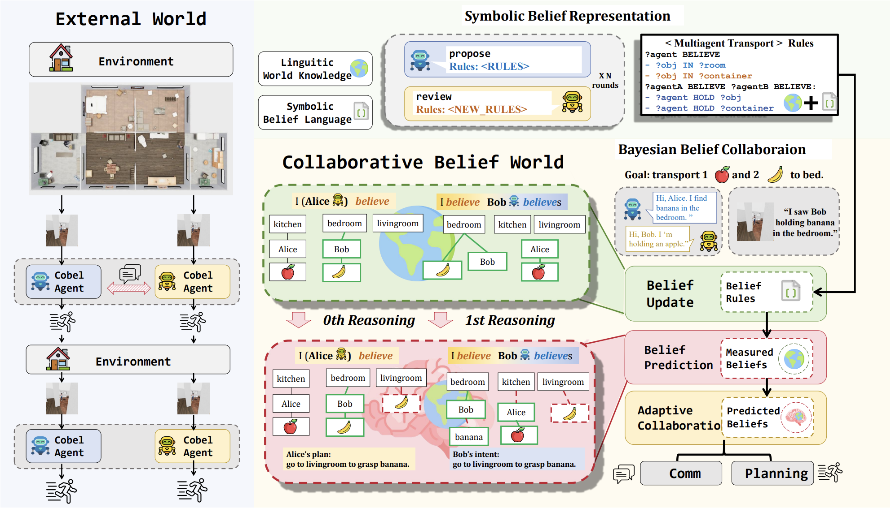
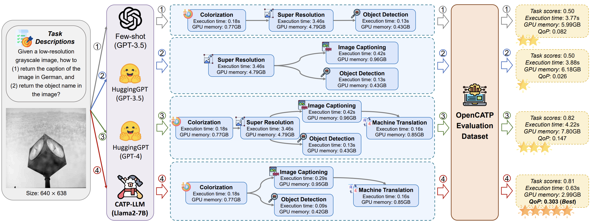
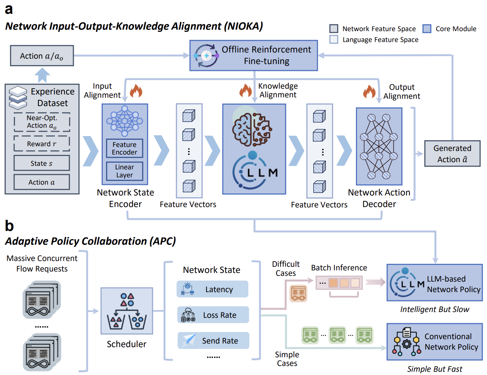
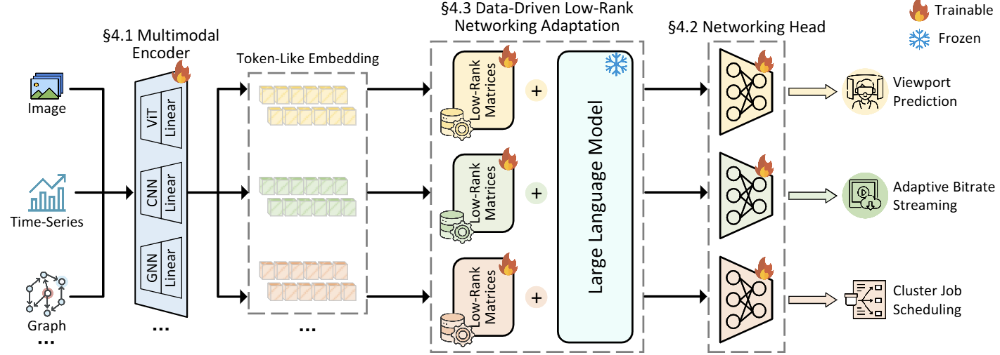
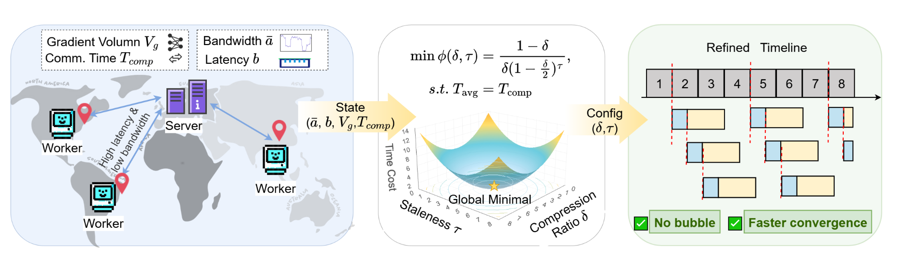
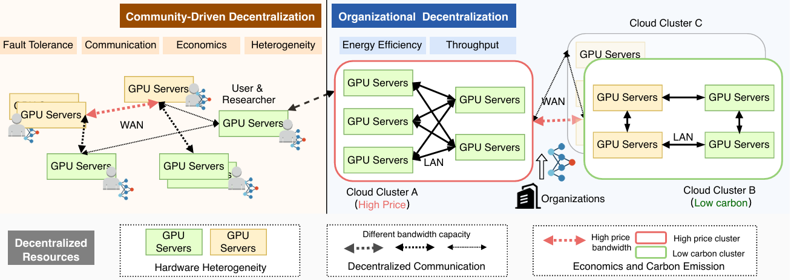

通信优化与压缩 (Communication Optimization and Compression)
近期工作
智能体

Learning with Challenges: Adaptive Difficulty-Aware Data Generation for Mobile GUI Agent Training
Linjia Kang*, Zhimin Wang*, Yongkang Zhang*, Duo Wu, Jinghe Wang, Ming Ma, Haopeng Yan, Zhi Wang.
Under Review [CCF-A]
PaperWebpage
MobileGen mimics how humans gradually learn to master complex tasks and adaptively increases training difficulty for GUI agent evolving.
Large-scale, high-quality interaction trajectories are essential for advancing mobile Graphical User Interface (GUI) agents. While existing methods typically rely on labor-intensive human demonstrations or automated model exploration to generate GUI trajectories, they lack fine-grained control over task difficulty. This fundamentally restricts learning effectiveness due to the mismatch between the training difficulty and the agent's capabilities. Inspired by how humans acquire skills through progressively challenging tasks, we propose MobileGen, a novel data generation framework that adaptively aligns training difficulty with the GUI agent's capability frontier. Specifically, MobileGen explicitly decouples task difficulty into structural (e.g., trajectory length) and semantic (e.g., task goal) dimensions. It then iteratively evaluates the agent on a curated prior dataset to construct a systematic profile of its capability frontier across these two dimensions. With this profile, the probability distribution of task difficulty is adaptively computed, from which the target difficulty for the next round of training can be sampled. Guided by the sampled difficulty, a multi-agent controllable generator is finally used to synthesize high-quality interaction trajectories along with corresponding task instructions. Extensive experiments show that MobileGen consistently outperforms existing data generation methods by improving the average performance of GUI agents by 1.57× across multiple challenging benchmarks. This highlights the importance of capability-aligned data generation for effective mobile GUI agent training.

Collaborative Belief Reasoning with LLMs for Efficient Multi-Agent Collaboration
Zhimin Wang*, Duo Wu*, Shaokang He*, Linjia Kang, Jinghe Wang, Jing Yu, Kai Zhu, Jiawei Li, Zhi Wang.
Under Review [CCF-A]
Paper
CoBel-World enables LLM agents to infer the environment states and collaborators' intents by belief modeling, so that they can "talk less and do more".
Effective real-world multi-agent collaboration requires not only accurate planning but also the ability to reason about collaborators' intents -- a crucial capability for avoiding miscoordination and redundant communication under partial observable environments. Due to their strong planning and reasoning capabilities, large language models (LLMs) have emerged as promising autonomous agents for collaborative task solving. However, existing collaboration frameworks for LLMs overlook their reasoning potential for dynamic intent inference, and thus produce inconsistent plans and redundant communication, reducing collaboration efficiency. To bridge this gap, we propose CoBel-World, a novel framework that equips LLM agents with a collaborative belief world -- an internal representation jointly modeling the physical environment and collaborators' mental states. CoBel-World enables agents to parse open-world task knowledge into structured beliefs via a symbolic belief language, and perform zero-shot Bayesian-style belief updates through LLM reasoning. This allows agents to proactively detect potential miscoordination (e.g., conflicting plans) and communicate adaptively. Evaluated on challenging embodied benchmarks (i.e., TDW-MAT and C-WAH), CoBel-World significantly reduces communication costs by 22-60% and improves task completion efficiency by 4-28% compared to the strongest baseline. Our results show that explicit, intent-aware belief modeling is essential for efficient and human-like collaboration in LLM-based multi-agent systems.

CATP-LLM: Empowering Large Language Models for Cost-Aware Tool Planning
Duo Wu*, Jinghe Wang*, Yuan Meng*, Yanning Zhang, Le Sun, Zhi Wang.
ICCV 2025 [CCF-A]
PaperCode
CATP-LLM uses RL to reduce costs of LLM tool use without sacrificing performance, and establish the first platform OpenCATP for the evaluation of cost-aware tool use.
Utilizing large language models (LLMs) for tool planning has emerged as a promising avenue for developing general AI systems, where LLMs automatically schedule external tools (e.g., vision models) to tackle complex tasks based on task descriptions. To push this paradigm toward practical applications, it is crucial for LLMs to consider tool execution costs (e.g., execution time) for tool planning. Unfortunately, prior studies overlook the tool execution costs, leading to the generation of expensive plans whose costs outweigh their benefits in terms of task performance. To fill this gap, we propose the Cost-Aware Tool Planning with LLMs (CATP-LLM) framework, which for the first time provides a coherent design to empower LLMs for cost-aware tool planning. Specifically, To facilitate efficient concurrent tool execution and cost reduction, we design a tool planning language to enhance the LLM for creating multi-branch non-sequential plans. Moreover, we propose a cost-aware offline reinforcement learning algorithm to fine-tune the LLM to optimize the performance-cost trade-off in tool planning. In the lack of public cost-related datasets, we further present OpenCATP, the first dataset for cost-aware planning, which comprises 11,100 evaluation samples from diverse tasks. Extensive experiments show that CATP-LLM outperforms GPT-4 even when using Llama2-7B as its backbone, with the average improvement of 1.5%-93.9% in terms of plan quality.
大模型决策

Large Language Models as Generalist Policies for Network Optimization
Duo Wu, Linjia Kang, Zhimin Wang, Fangxin Wang, Wei Zhang, Xuefeng Tao, Wei Yang, Le Zhang, Peng Cui, Zhi Wang.
In Submission
PaperWebpage
Trailblazer (开拓者) establishes a new paradigm that leverages LLMs as generalist policies to achieve unprecedented generalization in networking. It is also the first to deploy LLMs in open-ended world for large-scale network control in Douyin (Chinese TikTok).
Designing control policies to ensure robust network services is essential to modern digital infrastructure. However, the dominant paradigm for network optimization relies on designing specialist policies based on handcrafted rules or deep learning models, leading to poor generalization across diverse tasks and environments. In contrast, large language models (LLMs), pretrained on Internet-scale corpora, provide a rich and unified knowledge base that encodes fundamental networking principles. Combined with their emergent abilities in generalization to unseen scenarios, LLMs offer a transformative foundation for generalist network policies that can generalize across diverse tasks and environments with minimal adaptation. In this paper, we present Trailblazer, the first systematic framework to realize such a generalist policy for networking. Trailblazer incorporates a network alignment scheme to ground the LLM in specific networking tasks, and an adaptive policy collaboration mechanism that offloads simple control cases from the LLM to a lightweight policy for computational efficiency. Through extensive simulations and large-scale real-world online evaluation on Douyin (the Chinese version of TikTok), Trailblazer, powered by a single LLM, demonstrates stronger cross-task and cross-environment generalization than conventional specialist policies. Our results validate LLMs as the foundation for generalist network policies, and position Trailblazer as the first step toward the generalist-driven paradigm that enables strong generalization with minimal efforts in policy design.

NetLLM: Adapting Large Language Models for Networking
NetLLM is the first systematic transfer learning framework that adapts LLMs to solve decision making problems in networking. It provides valuable insights on LLM domain adaptation for the broad research communities.
Many networking tasks now employ deep learning (DL) to solve complex prediction and optimization problems. However, current design philosophy of DL-based algorithms entails intensive engineering overhead due to the manual design of deep neural networks (DNNs) for different networking tasks. Besides, DNNs tend to achieve poor generalization performance on unseen data distributions/environments. Motivated by the recent success of large language models (LLMs), this work studies the LLM adaptation for networking to explore a more sustainable design philosophy. With the powerful pre-trained knowledge, the LLM is promising to serve as the foundation model to achieve "one model for all tasks" with even better performance and stronger generalization. In pursuit of this vision, we present NetLLM, the first framework that provides a coherent design to harness the powerful capabilities of LLMs with low efforts to solve networking problems. Specifically, NetLLM empowers the LLM to effectively process multimodal data in networking and efficiently generate task-specific answers. Besides, NetLLM drastically reduces the costs of fine-tuning the LLM to acquire domain knowledge for networking. Across three networking-related use cases - viewport prediction, adaptive bitrate streaming and cluster job scheduling, we showcase that the NetLLM-adapted LLM significantly outperforms state-of-the-art algorithms.
大模型分布式训练

Taming Latency and Bandwidth: A Theoretical Framework and Adaptive Algorithm for Communication-Constrained Training
Rongwei Lu*, Jingyan Jiang*, Chunyang Li, Xingguang Wei, Zhi Wang. Under Review [CCF-A]
Paper
DeCo-SGD addresses the three-way trade-off among compression ratio, staleness, and convergence rate in cross-datacenter training, achieving up to 5.07× speedup through adaptive compression and staleness selection.
Regional energy caps limit the growth of any single data center used for large-scale model training. This single-center training paradigm works when model size remains manageable, but exponential growth in the model size and computational demand challenges it. A natural alternative is to distribute training across multiple data centers over wide-area networks. This pools distributed resources, but suffers from high latency and low, time-varying bandwidth, sharply reducing throughout. Employing jointly gradient compression and delayed aggregation can alleviate communication problems, but introduces a complex three-way trade-off among compression ratio, staleness (delayed synchronization steps), and convergence rate. Existing work lacks theoretical guidance and can only propose fixed strategies, insensitive to computation and communication conditions. We address this with a new theoretical tool, decomposing the joint optimization problem into a traditional process plus multiple analyzable noise terms. Our analysis yields the first convergence rate for this setting and shows that increasing staleness exponentially amplifies the detrimental effect of compression. Leveraging these insights, we propose DeCo-SGD, which dynamically selects the compression ratio and staleness based on the real-time communication and computation conditions. DeCo-SGD achieves up to 5.07× and 1.37× speed-ups over distributed SGD and static strategy in high-latency and low, varying bandwidth networks, respectively.

Beyond A Single AI Cluster: A Survey of Decentralized LLM Training
This survey presents the first comprehensive exploration of decentralized LLM training as a resource-driven paradigm, categorizing existing efforts into community-driven and organizational approaches to democratize LLM development.
The emergence of large language models (LLMs) has revolutionized AI development, yet the resource demands beyond a single cluster or even datacenter, limiting accessibility to well-resourced organizations. Decentralized training has emerged as a promising paradigm to leverage dispersed resources across clusters, datacenters and regions, offering the potential to democratize LLM development for broader communities. As the first comprehensive exploration of this emerging field, we present decentralized LLM training as a resource-driven paradigm and categorize existing efforts into community-driven and organizational approaches. We further clarify this through: (1) a comparison with related paradigms, (2) a characterization of decentralized resources, and (3) a taxonomy of recent advancements. We also provide up-to-date case studies and outline future directions to advance research in decentralized LLM training.